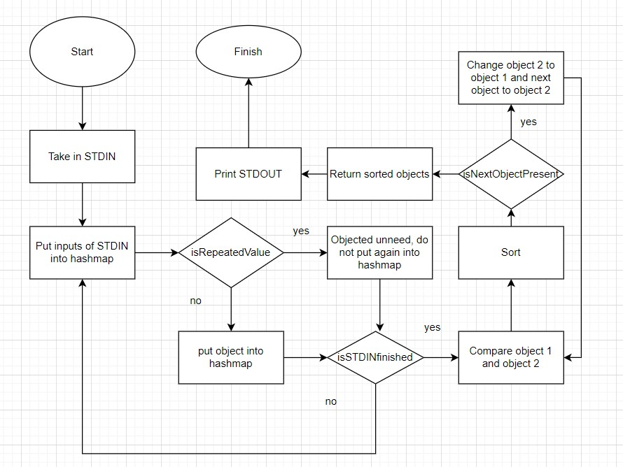

Students Involved: Alan Roybal, Adheesh Katru, Zoe Yau, Heng Yi Lee
Allen High School STEAM Center
Advanced Computer Science III
Mr. Ben-Yaakov
October 3, 2022
Analysis of the Efficiency of Sorting Methods
Sorting algorithms use big O notation to represent their sorting speed in a mathematical function. The average big O notation for bubble sort, insertion sort, and selection sort is O(n^2) for n number of items in a list. This means that the sorting time increases with the square of the number of items in a list in a polynomial function, and not in a linear fashion. However, the three sorting algorithms have key differences that alter their times. Insertion sort makes fewer comparisons between the numbers when compared to bubble sort and selection sort, which allows for it to be more efficient, and therefore is faster. Selection sort makes more comparisons than insertion sort, but fewer comparisons than bubble sort, which makes it faster than bubble sort, and slower than insertion sort. Within the data, it can be seen that the differences between the three sorting algorithms are negligable, but when the number of words starts to get large, then the impact of the differences of efficiency between the algorithms can be seen. The differences in the ordering of the three files also played a large role in the speed of how the algorithms were able to sort the lists of strings.